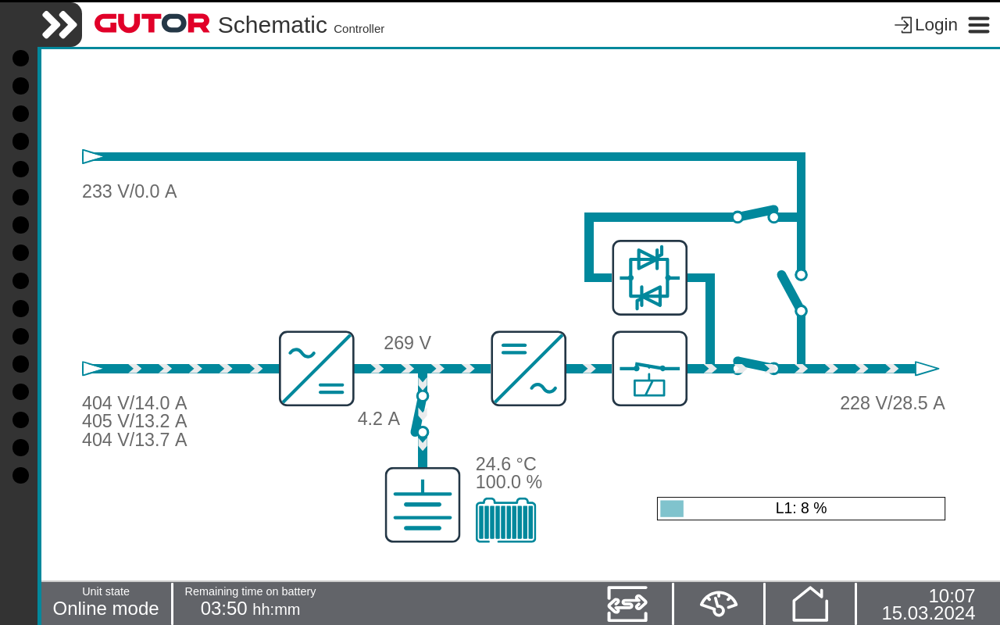

How to Change to Normal Operation Press the Switch operation icon in the Status bar. Press the Normal operation button. Confirm the change. Note: The current active inverter operation mode is indicated by the green icon. Press the Home icon and check that the power flow indicates normal operation and that the Unit state is Online mode.  The system have switched to normal operation and the load is supplied from the inverter.